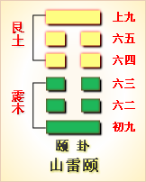

高岛易断 - 64火水未济
高岛易断 64 火水未济
《未济》反《既济》，以《既济》之上卦，反而居下，《既济》之下卦，反而居上。火与水相背不交，是炎上者未能成其炎，润下者未能致其润，此卦所以名火水《未济》也。
未济：亨，小狐汔济，濡其尾，无攸利。
不曰不济，而曰"未济"，非安处不济也，未耳。盖《未济》而自有可济，亦未亨而自有可亨，故曰"未济亨"。《坎》为小狐，"汔"，几也。济必登岸，始为《既济》，一步不至，犹未也，"汔济"安得为济哉！小狐力弱，中流失济，尾重不掉，难免濡矣，复有何利？故曰"小狐汔济，濡其尾，无攸利"也。
《彖传》曰：未济，亨，柔得中也。小狐汔济，未出中也。濡其尾，无攸利，不续终也。虽不当位；刚柔应也。
此卦下《坎》上《离》，《坎》为水，《离》为火，火上水下，水火不相交，即水火不相为用，为天地昏而未旦，宇宙混而未开之会也。《既济》《未济》，《彖》皆言"亨"，《既济》之亨，已然之亨；《未济》之亨，未然之亨。未然之亨，而终可得亨者，以其柔之得中也。小狐不能涉川，不自量力，贸然前进，虽几乎济，而终至不济，未能出险之中也。三四当卦之冲，《坎》尽于三，故未出中；未出中，则飘泊中流，欲进不能，欲退不得，是足未登，而尾已濡矣，"不续终"者，谓续《既济》之终也。《既济》之终，乃《未济》之始，《既济》之首，乃《未济》之尾。《既济》之终而濡首，则《既济》几不保其终，所望《未济》续之耳。乃《未济》而濡尾，则不能续《既济》之首，即不能续《既济》之终矣。《既济》《未济》，首尾相接，终而复始，不续其终，譬如寒暑不错行，日月不代明，而天地亦几于息矣，况于人事乎？故"无攸利"。处《未济》者，所当原始要终，力求其济，勿效"小狐汔济"而濡尾也。在一时之《未济》者，无他，以其位之不当也，然位虽不当，要自有可济之理。《既济》之为《既济》，无非以刚柔之相应，《未济》亦同此刚柔，由未而既，在此一济，即在此一续，则《未济》之终，亦即为《既济》之终，而乾元亦由是而始焉。
以此卦拟人事，人生涉世，不能无险，不能不求其济。当其未济，固不可安于未济，所当黾勉以期其济。安于未济，则终不济矣；黾勉以期其济，虽一时未济，而终必可济也。《未济》而进为《既济》，《既济》之亨即可为《未济》之亨矣，故《未济》亦亨。处未济者，由此济彼，涉夫险中，即出夫险外，必求彼岸之登，不为中道之划。《既济》之首可续，《未济》之尾不濡，复何往而不利者哉！人事当此，绝而复续，终而复始，已然者保而无失，未然者进而无穷，如是则未济者必济矣。而一时犹有未济者，以其位之不当也。按爻位必火在下，则水受其煎，必水在上，则火奏其功，颠倒失位，是两不相用也；不相用，则不相济，然亦非终不济也。卦体上互《离》，下立《坎》，《坎》刚《离》柔，上下相互，即上下相应，《既济》之为既济，在此刚柔之相应，《未济》之进为既济，亦在此刚柔之相应耳。以柔济刚，即以终续始，复有何险之不济哉！天道循环，人事代更，要不外此刚柔之相应而已。
以此卦拟国家，国家之兴衰治乱，颠覆存亡，惟在《既济》与《未济》相续相保而已矣。作《易》者在殷周之际，论者谓《既济》之卦属诸殷纣，《未济》之卦属诸周文，文当蒙难艰贞，正值未济之时也，而小心翼翼，不回厥德，乃所以求其济焉。彼密祟之距侵，皆小狐之汔济，其何能济哉！惟文以柔顺文明，蒙此大难，率能无畔援，无歆羡，诞登道岸，其济也，其亨也，其得天人之相助，而成其济也，庶几大畏小怀，无往而不利者矣。乃能以周继殷，即周之未济，以续殷之既济，则殷之变而为周者，亦即此首尾之相续也。后世继周而值《未济》者，皆当取法于文也。《诗》云"淠彼泾舟，亟徒棹之"，可想见其济之亨也已。
通观此卦，《既济》者功已毕，《未济》者事复始，终而复始，有生生之义焉。"生生之谓《易》"，《易》所以终于《未济》也。《既济》者水在上，势欲下，火在下，势欲上，二气参和，交致其用；《未济》反是，炎上者上升，流下者反下，分背不交，不相为用。致用则其用已成，不相为用，而其用正有待也，此即五德相乘，四时递嬗，无绝不续之运会也。《坎》《离》之既《未济》，犹《乾》《坤》之《泰》《否》，《泰》极则《否》，《既济》而后《未济》，其象同焉。为卦下三爻为《未济》中之《未济》，上三爻则为《未济》中之《既济》，由未而既，故爻象视《既济》为吉，卦体《坎》上《离》下，《离》为日，《坎》为夜，《离》明《坎》暗，《离》虚《坎》实，德莫大于明，道莫神于虚，故《坎》降而《离》升，《坎》隐在内，《离》明在外，日丽天上，水行地下，《乾》《坤》正位，法象之自然也。圣人于此，当其既济，不忘未济之念，当其未济，倍切既济之图，业必慎于创始，功不隳于垂成，俾天运得以永贞，治道得以久安，岂不甚愿？无如阴阳倒置，爻位失当，《坎》《离》各安其宅，水火互藏其用，卦所以为《未济》也。在六爻，位皆不当，而刚柔则各相应也。初濡尾，无济之具也；二曳轮，得济之具也；三涉川，以躁动而凶也。内卦三爻，皆为欲济而犹未济者也。四"有赏"，以《震》伐而行志也；五辉光，以"有孚"而获吉也；上濡首，以饮食而失节也。外卦三爻，皆进《未济》而为《既济》者也。爻以二五为正应，故皆曰"贞吉"；初与四虽应，初当济之始，四得济之中，故初不如四吉；三与上皆处极位，三以《未济》而失利，上以《既济》而失节，故皆示以为戒，戒之正，所以保其终也。《易》之道以不终为终，乃无终而非始，故《乾》曰"无首"，《坤》曰"大终"。六十四卦，不终于《既济》，而终于《未济》，为《既济》者已尽，《未济》者无穷，以既启未，以未续既，《乾》《坤》之大用，即在《坎》《离》之相续也。
《大象》曰：火在水上，未济。君子以慎辨物居方。
火热水寒，物之各异其性也；《离》南《坎》北，方之各殊其位也。火在水上，是炎上润下，并失其位，两不相济也，故曰《未济》。君子观其象，而辨之居之，辨其物，使物得其宜，而不相混，居其方，使方从其位，而不相越。皆以审慎而出之，斯知之无不明，处之无不当，而其未济者乃可进于济矣，故曰"君子以慎辨物居方"。
【占】 问时运：运途颠倒，诸事须慎。
○ 问营商：货物失当，地位不合，所当谨慎处置，方可获利。
○ 问功名：未也。
○ 问战征：营垒器具，各失所宜，不相为用，急宜慎重审察，斯可免败。
○ 问家宅：方向倒置，须当改易。
○ 问婚姻：门户不合。
○ 问疾病：上下焦血络不通，宜升不升，宜降不降，药方最宜审慎。
○ 问失物：辨明方位，可以寻得。
○ 问六甲：上月生女，下月生男。
高岛易断 初六：濡其尾，吝。
《象传》曰：濡其尾，亦不知极也。
初居《未济》之始，《彖》所云"小狐汔济，濡其尾"，初爻当之。《未济》之初，与《既济》之上，首尾相接，《既济》之上，以濡首而厉，初踵其后，见上之濡首，反而自惩，未济者亦可免于濡矣，乃前首后尾，同遭其濡，顽不知戒，故曰"吝"也。《象传》以"亦不知极"释之，谓前覆其辙，后又不知而蹈之，故曰亦术知其极也。
【占】 问时运：不审前后，不顾进退，鲁莽从事，是昏而无知者也。
○ 问营商：前既失败，后又不戒，覆辙相仍，其将何以了事乎？
○ 问功名：龙头既失，骥尾亦必难附。
○ 问婚姻：流离首尾，团聚难矣。
○ 问家宅：此宅前门后户，方位不正。
○ 问疾病：病在下身。
○ 问六甲：生男。
【例】 友人某来，请占制造物品生业如何，筮得《未济》之《睽》。
断曰：初居《未济》之初，正在济末将济之时，《既济》之终"濡其首"，《未济》之始"濡其尾"，有首尾不相顾之象。今君占制造生业，得此爻辞，知此业必是旧业，君接其后而重兴也。君乃不知前车之覆，贸然而蹈其后，以致制品所出，一时不能销售。以此质金，反致失利，得失不偿，进退两难，几同"小狐汔济"，而"濡其尾"也，未免吝矣。至二爻曰"曳其轮，贞吉"，在明年当以车运出外，可以贩卖获利也，君可无忧焉。
高岛易断 九二：曳其轮，贞吉。
《象传》曰：九二贞吉，中以行正也。
二居《坎》之中，《坎》为轮，故曰"轮"。轮者，济之具也。《既济》初爻曰曳轮而濡尾，有济之具而濡者也；此曰曳轮，而不曰濡尾，有济之具而不濡者也，视《既济》之初为优矣，故曰"贞吉"。《坎》又为矫輮，按《周礼·考工记》，"行泽者反輮，行山者仄輮"，取其便于曳也。御轮济水，中道而行，其济以正，是为中行以正，吉何如之！《象传》所释，最为明著。
【占】 问时运：运如轻车渡水，中道以济，无往不利。
○ 问营商：有满载而归之象。
○ 问功名：二与五应，五为君，二为臣，二五皆吉，是君臣相济也。有后车以载之象。
○ 问战征：有曳柴伪遁之谋。
○ 问婚姻：有桓少君鹿车共挽之风，必得贤妇，吉。
○ 问家宅：有轮奂并美之象。
○ 问疾病：必是胸腹作鸣，辘辘如车声，宜开通三焦，使气机舒展，自愈。
○ 问六甲：生男。
【例】 明治八年九月，朝鲜国炮击我云扬舰，物论汹汹，朝廷将兴问罪之师。时陆军大佐某氏来请一占，筮得《未济》之《晋》。
断曰：水火不交，不相为用，谓之《未济》。然未济非不济也，时未至则不济，时至则济，故曰"未济亨"。为卦皆取水火，《既济》水在火上，初爻曰曳轮，是为陆道之轮车也；《未济》火在水上，二爻曰曳轮，是为海道之轮船也。今云扬舰被朝鲜炮击，爻曰"曳其轮，贞吉"，想虽被击，尚可曳轮而归，故不失其吉也。《象传》曰"中以行正"，言必得中和之道，以行其正，今年必不致构怨兴兵也。至三爻曰"征凶，利涉大川"，恐明年有事于朝鲜。曰"征凶"者，恐陆军不利；曰"利涉大川"者，知海军必大胜也。九四曰"贞吉，悔亡，震用伐鬼方，三年有赏于大国"，自二至四为后年，必可解决朝鲜之事矣。且二爻变而为《晋》，晋者，进也，《晋》五曰"失得勿恤，往吉，无不利"，上曰"晋其角，维用伐邑，厉吉，无咎"，是皆征伐有功之占也。占象如是，知以后必获大功。但《未济》以外卦为《既济》，内卦为将济，占在二爻，故今年未能成事，必待外卦，乃得全济也。
后朝鲜事局平和，征讨不兴，于是某氏来曰：前日之占，事未甚验，余曰：《易》占无不灵应，但所应有不在一时也。现虽归和平，其"中以行正"一语，恰好符合，此后占象，君须缓以待之，无不应也。
高岛易断 六三：未济，征凶。利涉大川。
《象传》曰：未济，征凶，利涉大川，位不当也。
三爻以阴居阳，当内外卦之交，首尾俱不着岸，故爻曰"未济"。专以卦名归之，谓《未济》之所以未济者，在此爻也。三为《坎》之，地当重要，进一步则出险，误一步即履危，鲁莽前进，一经失足，功败垂成，故曰"征凶"。然《未济》有可济之道，有险有出险之时，自古定大难，建大功者，罔非从"征凶"之时而兴起也。所谓"征凶"者，第戒其不可妄动，非欲其退缩不前。三之地，正当利涉之地，三之时，正当利涉之时，此而不济，则终不济矣，此而得济，则汔济者乃得济矣。《象传》曰"位不当也"，《未济》六爻，位皆不当，三为《坎》之终，故《传》专以不当释之。
【占】 问时运：宜镇静待时，躁动则凶。
○ 问战征：宜会集海军，水陆并进，则凶者吉矣。
○ 问营商：以舟运为利。
○ 问功名：有涉川作楫之材。
○ 问婚姻：《诗》云"造舟为梁，亲迎于渭"，迎娶则吉，往赘则凶。
○ 问疾病：《艮》为狐，病由狐祟所致，宜涉川以避。
○ 问六甲：生男。
【例】 三十年，占众议院气运，筮得《未济》之《鼎》。
断曰：此卦火上水下，水火不相为用，故曰"未济"。三爻居上下内外之交，出《坎》入《离》，正当《未济》之时，是以爻辞直曰"未济"。曰"征凶"者，指初之濡尾也；曰"利涉"者，指二之曳轮也，为利为凶，任人自为之耳。《传》则释曰"位不当"，于此即可见众议院之气运矣。盖在政府欲效欧美之文明，以图富强；在众议员，欲学欧美之自由，以图权利，犹之火上水下，两不相济也。且现时所选议员，多由贿赂而来，是明明位之不当也，由此以往，安得不凶？故曰"征凶"。然于议院之设，苟当其位，而"中以行正"，未始无利，故曰"利涉大川"。但此爻处《坎》之终，犹未出险，今年众议院，正当未济之地，难期盛旺。四爻曰"贞吉，悔亡，震用伐鬼方，三年有赏于大国"，知明年众议院，必得其人，能赞襄国家大事，劳邀厚赐，此盛象也。五曰"君子之光"，五为君，定当入观天颜，武功文德，并焕辉光矣。
高岛易断 九四：贞吉，悔亡。震用伐鬼方，三年有赏于大国。
《象传》曰：贞吉，悔亡，志行也。
《未济》济在四，《既济》济在三，《未济》之四，即《既济》之三，故爻辞皆曰"伐鬼方"。三居《离》之始，《离》为戈兵，故"用伐"。《坎》为鬼，故取象于"鬼方"。"震"者，威怒之象，所谓一怒而安天下之民也。《未济》则有悔，济则悔亡。故曰"贞吉，悔亡"。"三年"者，言其久也，即《既济》三爻所云"三年克之"也。"有赏"者，为献俘授馘饮，至大赏是也。"大国"谓殷，爻虽不明言高宗，要不出《既济》三爻之义也。《象传》曰"志行"，谓班师奏凯，威震遐方，主三军者，得行其志矣。《既济》三爻《传》曰"惫也"，为劳师远征而言；此《传》曰"志行"，为振旅告捷而言。
【占】 问时运：有此大运，"贞吉，悔亡"，名利俱全。
○ 问战征：率军远征，奏凯而还，得以荣邀赐命。
○ 问营商：行商远出，财利丰盈。
○ 问功名：声名远震，得承天宠。
○ 问婚姻：三年可成。
○ 问家宅：贞吉。
○ 问疾病："鬼方"二字不祥，三年后恐难保。
○ 问六甲：生女。
【例】 友人某来请占气运，筮得《未济》之《蒙》。
断曰：此卦下三爻为《未济》之时，上三爻为《既济》之时，今占得四爻，知年来困苦之事，渐》次可奏成功，谓之"贞吉，悔亡"。"震用伐鬼方，三年有赏于大国"者，知君于此三年中，得以威名远扬，赏赐荣膺，为生平业成志满之时也。
【例】 明治二十七年冬至，谨占二十八年圣运，筮得《未济》之《蒙》。
断曰：四爻当内外之交，出《坎》入《离》，为脱险难而进文明，是由《未济》而抵《既济》也。今占得四爻，爻曰"震用伐鬼方"，是为征清得胜也；"三年"者，谓战役之久；"有赏于大国"者，谓奏凯行赏也。
高岛易断 六五：贞吉，无悔。君子之光。有孚，吉。
《象传》曰：君子之光，其晖吉也。
五为《未济》一卦之主，居《离》之中，与四相比，与二相应。二以居中行正，四以征伐有功，当此文德昭明，武功显著；臣下之勋业，要即为天子之威光也，故曰"君子之光"。柔得中，故"贞吉，无悔"。《离》为明，为光，德莫盛于明，业莫大于光，六五之君，和顺积中，英华发外，其光皆出于君子之身，天下莫不仰文明之化，故曰"有孚，吉"。《象传》以"晖吉"释之，谓其笃实辉光，自然昭著，吉何如也！
【占】 问时运：运当全盛，百事皆吉。
○ 问战征：《师》卦曰"师贞，丈人吉"，可并占之。
○ 问营商：其营业必关系政府公干，或为军饷，或为军器，得沾朝廷之余泽，故吉。
○ 问功名：有入觐天颜之象。
○ 问家宅：此宅大吉，当邀旌赐之劳。
○ 问婚姻："君子好逑"，必得。
○ 问六甲：生女，主贵。
【例】 某缙绅来，请占官阶升迁，筮得《未济》之《讼》。
断曰：五爻居《离》之中，《离》为日，为光，五当君位，日有君象，故曰“君子之光”。日光照临，下土遍被，故曰“有孚”。五与二应，二为臣，是先得“君子之光”者也。今足下占禄位升，得《未济》五爻，五为尊位，二爻属贵下，二爻曰“曳其轮，贞吉”，轮为日轮，曳轮者，有如羲和御日，是为天子之近臣，沐浴圣化，瞻仰龙光，君明臣良，可为贵下贺焉。
高岛易断 上九：有孚，于饮酒，无咎。濡其首，有孚失是？
《象传》曰：饮酒，濡首，亦不知节也。
上爻当《未济》之终，反为《既济》，坎险已脱，上下交孚，则饮食以燕乐之。《诗》“南有嘉鱼，君子有酒，嘉宾式燕以乐”，《序》曰太平君子至诚。乐与贤者共之，有孚于酒食之义也，故“无咎”。然酒以成礼，不及于乱，立监立史，所以示其节也，“濡其首”，则醉而不出，是谓伐德，亦何取于孚矣，故曰“有孚失是”。是始为有孚而饮酒者，继反为饮酒而失孚也，《象传》以“不知节”释之。《易》之为书，患太过，更甚于防不及，欲不可纵，乐不可极，持盈保泰，无非节也。此特于《未济》之终，借饮酒以为喻耳。
【占】 问时运：《坎》难已平，众心欢乐，能知撙节，可以永保无咎。
○ 问战征：此为得胜班师，饮酒策勋之时也。
○ 问营商：已得厚利而归，从此量入为出，富可永保矣。
○ 问功名：有得而复失之患。
○ 问疾病：必是饮食不节所致。
○ 问讼事：《序卦》曰“饮食必有讼”，知其讼必由于酗酒来也。
○ 问六甲：生女。
【例】 二十八年七月廿七日薄暮，余与友闲叙于书楼，偶闻有叫新闻号外者，客曰：号外所报，不审何事，君试占之。筮得《未济》之《解》。
断曰：号外所报，必因饮酒过度，醉溺水中之祸也。时女仆适赍号外来，展而阅之，为山阳铁道，汽车颠覆中途，致伤旅客之报也。
后数日，会该铁道会社员，问及当时情况，曰：会风雨暴作，劝令止车，机关师某不肯，临行且满酌火酒，启车而进，猝罹此祸，因此伤命云。乃知爻辞，果不虚也。
《易》六十四卦，《上经》首《乾》《坤》，终《坎》《离》，《下经》首《咸》《恒》，终既《未济》。《咸》《恒》为夫妇，由《乾》《坤》而生也；既《未济》为水火，由《坎》《离》而化也。其变万殊，其旨一也。《乾》道尚虚，坤道尚实，《坎》象中实，《离》象中虚，《易》始于虚，亦终于虚，虚则灵，灵则变化神焉。交互错综，循环反复，始而复终，终而复始，究之无所谓始，无所谓终，无所谓虚，无所谓实。“变动不居，周流六虚”，《易》之妙用，无非以此虚灵二气，运用于三百八十四爻之中而已矣。
注 释
［1］
咸：xián，据甲骨文，从戌，从口，戌是长柄大斧，“口”指人头，合起来表示大斧砍人头，本意为杀。皆，悉，全，都，普遍，全面。和睦，融洽；还读jiān，束住棺木用的绳子，牵引，拉；还读jiǎn，通“减”，损也；姓氏。通“感”，感应，沟通，合和，求爱，情感，心灵，受伤，过敏，麻木，抽筋，哆嗦，身上或腿肚子、足部、胸部、脸上、舌头等处有时有麻木抽筋或哆嗦的感觉。有人是受伤造成的后遗症，有人是性爱造成的暂时现象。
［2］
恒：héng，金文，从心，从月，从二，“二”，表示天地（月亮悬挂于天地之间已有亿万年之久，古时的恒表示弦月，离满月不远了，而此时的月色最为光亮，持续的时间最长），本意为永久，永恒。常，久，经年不变；寻常；还读gèng，上弦月渐趋盈满的样子；及，遍及；通“亘”，绵延，连接，延续，横贯，贯通，追究，探究。五岳之一：华、岱、恒、衡、嵩。
［3］
浚：jùn，繁体“濬”，从水，雋声。本意：从水中舀取，转指深挖水道以疏通水流，即疏通、疏浚，使水路畅通，又当榨取、掠取讲；“濬”，穴为洞穴，人或物可以藏于其中，目表示搜寻，支表示支使别人去搜寻，濬的本意是设法寻找，或设法支使别人寻找，另外一个意思是深远的样子；用作人名；还读xùn，古邑名，今天的在河南省浚县。
［4］
罔：wǎng，从网，亡声，本意为渔猎用的网。用网去捕捉；连接，编织；诬陷，陷害，迫害；无，没有；不，不能，不要，不可；通“惘”，迷惑，迷茫，昏乱。
［5］
羝：dī，公羊，壮羊，三岁的羊，黑颜色的公羊。
［6］
藩：fān，从艸，潘声，本意为篱笆。藩篱，屏障，用篱笆围起来；保卫，保障；藩国：国王分给诸侯王的封地，借指边防重镇，藩属，藩国，藩镇。
［7］
羸：léi，从羊，本意为瘦弱。瘦羊，瘦弱，羸瘦；疲困；衰弱；通“累”，繁体为“纍”或“缧”，绳索，缠绕，困住，拘系。
［8］
京房（公元前77—前37年），易学师从梁人焦延寿，对《周易》象数多有发明，言纳甲、八宫、世应、飞伏、五星四气等。而且能够运用象数理论进行占验。据其弟子说：“房言灾异，未尝不中。”死后，其学传与东海段嘉、河东姚平、河南秉弘，形成了西汉易学中的“京氏之学”。京氏一生撰写了不少的易学著作。
［9］
决：jué，从水，夬声，本意为疏通水道，使水流出去。水把堤岸冲开，冲破，决口，决堤；判断；决断，决定；肯定，一定；处以死刑，处决；通“诀”，分离，分别，诀别。还读xuè，水名；漩涡（方言）；旋转，摇动；快，疾。还读quē，通“缺”，分裂，裂开。
［10］
遂：suì，从辵，本意逃亡。田间水沟；生长，成长，顺利地生长；顺心，称心，如意；竟，终，终于；于是，就；顺利地完成，成功。还读suí，听从使唤，半身不遂。
［11］
晋：jìn，繁体“晉”，从日，指追着太阳一直前进，本意为上进。进，晋级，晋升，晋谒（进见）；古朝代名，西晋，东晋，春秋诸侯国名；今山西简称；姓氏。
［12］
兹：zī，从艸，滋省声。本意：草木茂盛。很黑；通“滋”，益，更加，越发。还读cí，此，这；现在；年，今年。
［13］
鼫：shí，古书上指鼯鼠一类的动物，亦称“大飞鼠”，也称石鼠、梧鼠，能飞，能爬，能游，能穴，能走。
［14］
箕子：纣王的叔父，因其品行高尚，被孔子誉为殷之“三仁”之一，在商周政权交替与历史大动荡的时代中，因其道之不得行，其志之不得遂，“违衰殷之运，走之朝鲜”，建立了箕子朝鲜，后被汉朝燕人卫满灭亡。从箕子开始，一共经历了41代君主，传国900多年，被誉为东方君子国，其流风遗韵，至今犹存。（目前有部分朝鲜、韩国学者对此段历史的存在有一定争议，不承认箕子朝鲜的存在。）
［15］
晦：huì，从日，每声，本意为阴历每月的最后一天。“朔”阴历每月初一；“望”：阴历每月十五日前后。夜晚：晦明；昏暗不明：晦暝，晦暗，晦涩；不顺利，倒霉：晦气。
［16］
馈：kuì，繁体“饋”、“餽”，从食，贵声，本意以食物送人。烹调，吃饭；馈赠，赠送。通“匮”，匮乏，缺乏，缺少。
［17］
嗃：hè，严酷，严厉的样子。还读xiāo，吹竹管的声音。还读xiào，大声嗥叫，大呼小叫。还读hù。
［18］
嗃：xī繁体“譆”，从口，喜声，本意为叹词，表示赞叹、悲叹或惊惧。表示悲痛、或斥责；表示赞叹，赞赏，愤怒，叹息等；强笑，苦笑；形容吃吃的笑声，笑嘻嘻。
［19］
假：jiǎ，从人，“叚”亦兼表字义，本意为不是真的。借给，假助，凭借；不真实，虚假，假的；代理的，非正式的，临时的；假设，假如，如果。还读jià，休息日，假日，假期。还读xiá，通“暇”，闲暇。通“遐”，远，高。还读jiā，嘉，美好。还读gé，通“格”，至，到达。
［20］
睽：kuí，从目，癸声，本意是指两只眼睛不同时看一物，又说彼此不互相注视。不合，违反，违背；分开，分离。
［21］
曳：yè，从申，伸展，从丿，亦声，本意为拖，牵引。超过，穿越；飘荡，飘浮；窘，窘迫，困顿。
［22］
掣：chè，从手，制声，本意为牵引，牵拉。拉拽，拔出，抽取，迅疾而过。
［23］
劓：yì，从刀，从鼻，刀割鼻子，本意为劓刑，割鼻的刑罪，古代五刑之一（中国古代的刑罚种类繁多，大致可以归为五类，隋以前的五刑为：墨、劓、刖、宫、大辟。隋后五刑：笞、杖、徒、流、死，以身体刑，又称痛苦刑，取代了肉刑）。除掉，消除，割除。
［24］
鬼：guǐ，甲骨文字形，下面是个“人”字，上面像一个可怕的脑袋，是人们想象中的似人非人的怪物，本意为古人认为人死后有“灵魂”，称之为“鬼”。万物的精灵，鬼怪，鬼神；隐秘的，不可捉摸的，阴险的，邪恶的。
［25］
蹇：jiǎn，从足，寒省声，本意为跛足。跛，行动迟缓，劣马或跛驴；钝，困苦，蹇涩，蹇滞，前途多蹇，艰阻，困境，困惑，不顺利，蹇拙（艰险），蹇兔（不能急走的跛脚兔，比喻弱小者），蹇驴（走不快的羸弱之驴），蹇人上天（跛子登天，比喻不可能的事）；古通”謇”，口吃，结巴；姓氏。还读qiān，通“褰”，撩起，撩起衣襟露出足；通“攓”“搴”，拔取，得到。
［26］
连：lián，繁体“連”，从辵，从车，本意为人拉的车，通“辇”。相连，接连，牵连；联合，使之合作；屡次，多次，连续，不停止；连及；姻亲关系；自，从；艰难；含有甚而至于之意。通“兰”，兰草。通“链”，铅。
［27］
解：jiě，从刀，从牛，从角，表示用刀把牛角剖开，本意为分解牛，后泛指剖开。分解，解体；涣散，流失；解下，开放；通达；解除，消除，解惑；分析文章，解释，理解；晓悟；排除；滑利。还读jiè，押送，押解，遣送，解差。还读xiè四声谢，通‘懈’，松弛，松懈，懈怠，解气；通“獬”；通“蟹”；姓氏，xiè。
［28］
隼：sǔn，据小篆，从隹，短尾鸟的总称，从一，表示这种鸟的标识，本意为鸟类的一科，翅膀窄而尖，上嘴呈钩曲状，背青黑色，尾尖白色，腹部黄色，饲养驯熟后，可以帮助打猎，亦称“鹘”，鹰一类的猛禽，在这里也指怪鸟。
［29］
损：sǔn，繁体“損”，形声，从手，员声，本意为减少。损：益也，损失，丧失，损害，损伤，减损，削减，减少，吝啬，舍不得，丢失。
［30］
违：Wéi，繁体“違”，从辵，韦声，本意为远离，离别，离开，躲开，躲避。违背，违反；过失，错误；邪恶不正；远，差异。
［31］
益：yì，小篆字形，像器皿中有水漫出，从皿，从水，“水”已隶变，本意为“溢”的本字，水漫出，水涨。增加；利益，好处；俞，更加，渐渐地，逐渐；富，富裕。通“隘”，阻碍。
［32］
圭：guī，繁体“珪”，“从重土”，本意为古玉器名，长条形，上端作三角形，下端正方，中国古代贵族朝聘、祭祀、丧葬时以为礼器，依其大小，以别尊卑。测日影的器具；鲜明，洁净；容量单位，六十四黍为一圭，四圭为一撮；圭臬（臬：射箭的靶子），标准，法度；重量单位，一两的二百四十分之一。
［33］
夬：guài，手持器物将东西分开。通“决，分决。通“快”，快慢。“夬”本是拉弓时戴在大拇指上的护套，弦由护套上弹离，所以有决断的意思。汉字中，大凡决旁的字，如决、快、诀、缺等，都有快的含义。分裂，决裂，断开，切断，果断，决断。私欲，决也，决断，决溃，判决，决裂，开拓，独裁，暴力，哭泣，刚决柔，迅速。决卦有五个阳爻，一个阴爻，是强大的阳将阴清除的形象，所以称作决卦。这一卦也是“消息卦”，代表三月。
［34］
愠：yùn，从心，昷声，本意为含怒，生气，愤怒，怨恨。害羞；愠怒的神色。还读yǔn，三声允，郁积，郁结。
［35］
姤：gòu，交互为婚姻，亲上加亲。通“遘”，相遇，遇见；好，善，夷姤。还读gǒu，意思相同。还读dù，通“妒”，妇女忌妒丈夫或别的女子的姿色，忌妒；忌恨。“姤”与逅同音同义，即邂逅，意外相遇的意思。姤：偶然，偶尔，偶合，配偶，遇也，相遇，意外，遇见，本无所望，不期而遇，突然而遇，他乡遇故知。美好，善良，善意。恶，丑恶，女权。姤：色情，一日好、一日情、一夜情。约会，交媾，暧昧，婚外情，女王蜂，女性要求太过，女方太任性或太过分之象。
［36］
柅：nǐ，从木尼声，本意为古书上说的一种树，果实像梨。挡住车轮使其不转动的木块；制止，阻止，遏制；一种络丝工具。还读chì，古同“杘”（chì），络丝车的摇把。
［37］
蹢：zhí，徘徊，蹢躅（徘徊不前进的样子）。还读zhì，投弃，抛弃。还读dí，兽蹄，蹄子。
［38］
躅：zhuó，从足，蜀声，三辅谓牛蹄处为躅。踪迹，遗迹；功绩；践踏，踏踩。还读zhú，同前。
［39］
杞：qǐ，从木，已声，本意为木名，枸杞，一种灌木，浆果卵圆形，红色，果实、根皮可入药。古国名，周分封的诸侯国，为楚所灭，杞人忧天；地名，河南杞县。
［40］
萃：cuì，从艸，卒声，本意为草丛生的样子。聚在一起的人或物，出类拔萃；引申为聚集，聚拢。通“悴”，憔悴，忧愁，悲伤。古通“崒”cuì，山峰高耸险峻。
［41］
庙：miào，繁体“廟”，从广，朝声，“广”与建筑物有关，本意为宗庙，供奉祭祀祖先的处所。泛指供祭神佛或人名之处；庙在古代又是议政、行礼的地方；引申为朝廷，也指寺庙及附近的集市。
［42］
牲：shēng，从牛，从生，本意是指供祭祀用的完整的牛。祭祀用的牛、羊、豕、马、犬、鸡等，三牲（古代特指供宴飨祭祀用的牛、羊、猪）；家畜，牲口，指供人役使的家畜，如牛、马、骡、驴等；通“腥”，生的肉食。
［43］
禴：yuè，古同“礿”，祭名，中国夏商两代在春天举行，周代在夏天举行，《礼·王制》天子四时之祭，春曰礿（一为祠），夏曰禘（一为禴），秋曰尝，冬曰烝。总之古代的禋、祀、祠、烝、尝、禴（礿）都是祭的意思。
［44］
赍：jī，繁体齎、賫、賷，拿东西给人，送给，赍助（接济，资助），赍赏（赏踢），赍钱（持赠金钱）；携带，持；引申为怀着。
［45］
咨：zī，，从口，次声，本意为商议，征询。咨询，征求意见；嗟叹声；叹息，赞叹（相当于“啧”）；用于同级机关的一种公文：咨文；同“龇”，露出。
［46］
洟：yí，指鼻涕，流鼻涕。
［47］
升：shēng，本意为容器名。计量单位，本意指一种容器，十合为一升，十升为一斗。上升，升高，提升，登升，升腾，升官，高升，进献，进奉，熟，成熟，进也，伸展，成长，坚实，自信，顺利，上进，晋升。
［48］
恤：xù，繁体“卹”、“賉”，从心，血声，本意为忧虑。对别人表同情，顾念，体恤，怜悯；救济，周济，抚恤。
［49］
岐：qí，山名，今陕西省岐山县东北，山形如柱，又名天柱山，是周文王的邦国。分支，分岔，分歧。
［50］
渫：xiè，淘去污泥。污浊，污姤。发散，散落。泄漏。止歇。姓氏。还读zhá，二声闸，把蔬菜在沸水里稍微煮一下。还读dié，二声叠，流泪不止的样子。
［51］
革：gé，金文字形，像被剖剥下来的兽皮，中间的圆形物，是被剥下的兽身皮，余下的部分是兽的头、身和尾，本意为去了毛的动物皮。皮的总称，皮革，人的皮肤；用革制成的甲盾；车前的饰物；变革，更改；免除或丢掉；中国古代乐器八音之一。通“勒”，马络头，有嚼口的叫勒，没有的叫羁。还读jí，通“亟”，急指病重。
［52］
这里有的说是已经之“已”，为终结，有的说成是地支之“巳”，“巳日”就是祭祀之日。“孚，字多解为“信”，全句的意思就是改革成功之日，民众就会信服。按高岛的理解此处应该为己，即天干己。《四库全书》经部易类所有书籍皆作“已日乃孚”。注者认为只要解释得通，己已巳都可以，不管是古人造字还是《易》，都注重象，在《易》中有很多通假字，或一字多解就是这个道理，高岛断易的一个原则就是要灵活运用卦爻辞的字意，所以不必强调哪个正确，哪个错误。
［53］
巩：gǒng，繁体为“鞏”，巩声，从革，表示与皮革有关，本意为用皮革捆绑物品，坚固。
［54］
鼎：dǐng，甲骨文字形，上面的部分像鼎的左右耳及鼎腹，下面像足。本意：古代烹煮用的器物，盛行于商、周，用于煮盛物品，或置于宗庙作铭功记绩的礼器，统治者亦用刑具鼎烹人，三足两耳，和五味之宝器，多用青铜器制成。传国的宝器，重器。鼎鼐（鼐为大鼎，均为古代炊具，用来调和五味，旧时用以比喻宰相治理国家）。大。变生为熟，以成香味，所以和饮食有关，如炖肉、锅仔、火锅等。
［55］
仇：chóu，讎、讐，仇的本意是指伴侣，配偶。后指仇敌，仇人。怨恨，仇恨。还读qiú，二声求，伴侣，配偶，同伴，朋友。
［56］
雉：zhì，从隹，矢声，短尾鸟的总称，本意是一种需通过打猎才能捕获的鸟。雉鸡，野鸡。古代计算城墙面积的单位，高一丈长三丈为一雉。城墙上的矮墙。
［57］
餗：sù，置放在鼎中的食物，本意指粥，常掺有肉和蔬菜。
［58］
渥：wò，沾润，沾湿。光辉，光泽。优厚，深厚。还读wǔ，三声武，同“捂”，盖住。盖上被子渥汗。还读òu，四声呕，通“沤”，沤泡，浸泡。涂抹。
［59］
铉：xuàn，古代用来举鼎的器具。鼎为三公之象，因此用铉来比喻三公。还读xián，二声闲，通“弦”，指弓弦。
［60］
艮：gèn，本意是指互不相让，僵持不下。止住，停止，阻留，停顿，静让，稳重，踏实，沉思，觉悟，开拓，不动，渐逃，难以前行，进而思退，明哲保身。
［61］
夤：yín，本意为尊敬，恭敬，深，晚，攀附。本书中说通“
”，为夹脊肉的意思，但《说文解字》无
字，只有“胂”为此意。因寅申相冲，相对，所以此处如果是肉意，应该是与夹脊相对的小腹部位。
［62］
渐：jiàn，漸，本意用作水名，即现在的浙江。表示程序、数量等慢慢地变化，慢慢地，一点一点地，一步一步地，逐渐，逐长，循序渐进；事物的开端，防微杜渐。还读jiān，流，流进。沾染，沾湿。浸染，浸泡，淹没。还读qián，通“潜”，潜伏，潜藏。还读chán，岩石高峻挺拔的样子。眼泪纷纷流下的样子。渐：还与洪水和鸟类有关，特别是水鸟。
［63］
“磐”，帛书作“坂”，竹书作“阪”。向来解此交，皆以“磐”为本字。其实，此爻当从帛本作“坂”或从竹本作“阪”。“坂”即“阪”字。《说文》阪，坡者曰阪，一日泽障也，一日山胁也。泽障即堤坡。渐卦初爻是水边，再往上当是堤坡的坡面，而坡面即为阪，故此处本字应为“阪”或“坂”字亦可。阪为坡面，坡面是可以种庄稼的，故鸿雁飞至“阪”处时，就引起了人们对坡面之处的庄稼的注意，从而联想到年成的丰收等。这是由象比类而系之辞。象与辞、辞与辞之间有着很自然的内在联系。
［64］
桷：jué，细木为桷，方形的椽子；指横平可作桷的树枝。
［65］
“归”的原意是嫁，也有回到应当回去的地方的意思。归妹：女子该出嫁了，畸形的恋爱，婚姻上的反常现象，比如，男女反差特别大，男老女少，女大男小，或是两个女人共同恋一个男人，或是两个男人共同恋一个女人，或是冒名顶替的交往，或是带有亲属关系的恋情，或是年岁差异大，或是地区差异，或是异族、异国婚姻，或是沾亲带故，或是年龄很大还不想结婚，等等，还有男阳痿、早泄，或女性性冷淡的现象。女方回娘家。
［66］
娣：dì，二女同嫁一夫，年长的称“姒”，年幼的称“娣”，同嫁给一个丈夫的妹妹。妾，小妾。
［67］
袂：mèi，本意指衣袖，引申为结成伙伴。袖子，衣袖。
［68］
筐：kuāng，用来盛物的方形竹器。床名，方正而舒服的床。
［69］
刲：kuī，杀，割，割取，割下。
［70］
蔀：pǒu，为覆盖于棚架上以遮蔽阳光的草席。
［71］
沫：mò，口中黏液，指唾沫。河水溅起的水花或水珠。通“昧”，即晦，古人在观察天象时发现了中午的天空出现了“斗”（日全食），或者说是发现了太阳出现了类似斗之形状的黑斑（太阳黑子）。
［72］
肱：gōng，手臂从肘至肩的部分，也有一说是从肘至腕的部分。手臂，胳膊。
［73］
琐：suǒ，本意是指玉器发出的细小声音。细碎，琐碎，琐事，细小，烦琐。连环，链锁。门窗上雕刻的连环形图案。
［74］
灾：zāi，災、烖、菑，灾是会意字，由表示房屋的“宀”和表示着火的“火”组成，合在一起是大火把房子烧了。本意指天地间自然着起的火，往往不是人为的。火灾，灾祸，灾难，烧，焚烧。
［75］
巽：xùn，小篆，从丌，本意是指具备。和顺，恭顺的样子。巽为木，为风，巽地（吉利的地方），巽二郎（传说中的风神），东南方，巽方（东南方），巽地（东南方位），巽风（东南风）；巽在人体代表肝；卑顺，怯懦；消散。通“逊”，退让。
［76］
庚：gēng，甲骨文像有耳且能摇动的乐器，又像双手摘取草木上的果实。后指天干第七位。年龄，贵庚，庚帖（旧时订婚，男女双方互换的八字帖，帖上写明姓名、生辰八字、籍贯、祖宗三代等）。路，道路。偿还，赔偿。持续，继续。“伏天”的代称，旧历杂节三伏，以夏至后第三庚日为始，名初伏，第四庚日为中伏，故有庚伏之称，“庚伏”也简称“庚”，庚暑（暑天）；赔偿，偿还。通“更”变更，更换；愈加。
［77］
兑：duì，从人，从口，八象气之舒散，兄者与祝同意，从八，与曾同意，本意为喜悦。直，通达，兑换，兑付，兑现，孔六；还读ruì，通“锐”，尖锐，锋利；还读yuè，通“悦”，高兴，愉悦，欢悦。
［78］
涣：huàn，从水，奂（huàn）声，本意为流散，离散。水盛的样子，水很大的；泛指盛貌；精神、组织、纪律等涣散；帝王发布号令，涣汗（比喻帝王的圣旨、号令，有如汗出于肤，无法收回）。通“焕”，鲜明，明亮。
［79］
机：jī，機，屋脊，房顶。最高位置，顶点，极点。到达尽头，到达极点。最，特别，非常。边界，边疆。
［80］
汗：hàn，身体排出的汗液。出汗，使之出汗。还读hán，可汗，古代西北少数民族称国王为可汗，简称“汗”。今内外蒙古，宁夏、新疆等地。姓氏。
［81］
逖：tì，本意表示远，使之远离，离开。通“剔”，治。
［82］
节：jié，節，竹节，植物枝的交接处。动物骨骼的衔接处。节制，节约，节省，吝啬。气节，礼节，节操，常规，礼节，法度，符节，古代用来做凭证的东西。节气，时节，季节。节律，节拍，节奏。容器，凹地，截流。一种竹子编织成的打击乐器。古时屋顶层层探出的弓形承重结构，也叫“斗拱”。
［83］
孚：fú，孚字上边是爪，下边是子，表示抓到一个孩子。在上古的战争中，胜利方往往将失败一方的男子全部杀掉，将妇女和孩子抓走，所以孚的本意是指俘获，用作名词，指俘虏。那么就现实社会而言，对于上边的“爪”可理解为公、检、法部门人员及战胜者，下边的“子”就是俘虏，就是囚犯，所以孚对战胜者来说，是收获，俘获；对犯法的人来说是牢狱。同时，孚也代表相信，信任，君臣上下相孚。“中孚”则是指心中诚信，感动，诚意，诚实，至诚，诚信，忠信，爱心，虑心，诚心，亲吻，谈判，信而有实，你方做出姿态，对方会来接应，互相亲和，开诚布公地交谈，表面华丽而内容却不充实。有言出法随，不可违背之象。有使人欣喜从命，步调一致之象。
［84］
阴：yīn，陰，山的北面，水的南侧。没有阳光，阴暗。阴影，影子。岁月，光阴，表示时间。寒冷，阴冷。阴险。暗处，暗中，秘密地，偷偷地。古代哲学概念，阴阳对立观点。
［85］
爵：jué，甲骨文字形，像古代饮酒器，本意为古代酒器，青铜制。盛酒的礼器，形似雀，青铜制，有流、两柱、三足，用以温酒或盛酒，盛行于殷代和西周初期。是皇帝分封诸侯赏赐给诸侯的。爵位，古代官位等级：公爵、侯爵、伯爵、子爵、男爵。还读què，四声雀，通“雀”，一种小鸟。
［86］
靡：mí，本意是指随风散乱倒下。挥霍，浪费，奢侈，细腻。还读mǐ，三声米，倒下，溃败，退却。无，没有，不能。还读mó，二声魔，通“摩”，摩擦。
［87］
“小过”即小的过失，小的过度，小的责备，小的错误，小的超越。
［88］
妣：bǐ，死去的母亲，祖母和祖母辈以上的女性祖先。
［89］
弋：yì，甲骨文字形，本意为小木桩，今字作“杙”。有绳子的箭。禽鸟；系有绳子的箭，用来射鸟，射猎。宰，取。黑颜色。
［90］
“济”是渡河，有成的含义，“既济”即既成，已经成功的意思。完善，合也，定也，理想，安定，成就。
［91］
茀：fú，从艹，弗声，字亦作“芾”。本意是指道路上长满杂草，难以通行。除草，清除。古代用来遮蔽车厢的物体。古代妇女的首饰。通“绋”，牵拉棺材的绳子。通“福”，福气，福禄。还读bó，通“勃”，喘气急促的样子，气息茀然。
［92］
襦：rú，短衣，短上衣，短襦。密网，密罗网。有版本为“繻”，彩色的丝织品。
［93］
马王堆帛书本作“濯”。原文为：“九五：东邻杀牛以祭，不如西邻之濯祭，实受其福。吉。”
周易 - 64火水未济
周易第64卦_未济卦(火水未济)_离上坎下
|  |

|

|
|
| 本卦 | 互卦 | 错卦 | 综卦 |
周易第六十四卦详解
未济卦原文
未济。亨，小狐汔济，濡其尾，无攸利。
象曰：火在水上，未济。君子以慎辨物居方。
白话文解释
未济卦：亨通。小狐狸快要渡过河，却打湿了尾巴。看来此行无所利。
《象辞》说：本卦上卦为离，离为火；下卦为坎，坎为水。火在水上，水不能克火，是未济卦的卦象。君子观此卦象，有感于水火错位不能相克，从而以谨慎的态度辨辩事物的性质，审视其方位。
《断易天机》解
未济卦离上坎下，为离宫三世卦。未济就是未完成，此卦爻位不正，形象上极端恶劣，但变化在酝酿之中，未来充满希望。
北宋易学家邵雍解
不能资助，待时而动；由小而大，不可躁进。
得此卦者，运势不通，诸事不能如愿，宜由小及大，稳步进取，要耐心去突破难关，则终可成功。
台湾国学大儒傅佩荣解
时运：运势颠倒，务必谨慎。
财运：诸事不顺，步步为营。
家宅：改变方向；门户不合。
身体：血脉不顺，用药谨慎。
传统解卦
这个卦是异卦（下坎上离）相叠。离为火，坎为水。火上水下，火势压倒水势，救火大功未成，故称未济。《周易》以乾坤二卦为始，以既济、未济二卦为终，充分反映了变化发展的思想。
大象：水性下注，火势向上，水火不交，阴阳不得正位，未能完成和未能成功之意。
运势：运气欠佳，但必须耐心突破难关，终可成功，有初凶后吉之象。
事业：处于最后的关键时刻，成功与否就在眼前，因此务必不可掉以轻心。自我节制非常重要，坚持到底，必要时也可能慎重地进行适度冒险，以成就事业。
经商：市场处于大变动的前夕，前景如何尚不明显。这是最为艰苦的时期，头脑必须冷静，切勿冒险，不可行动过度，适度节制，观察动向，决定行动。
求名：长期的努力和追求即会有结果。在成败的关键时刻应泰然自若，听天由命，顺其自然。
婚恋：已经渡过了困难阶段，再慎重地加把劲，会有美满的结果。
决策：此卦的意思是“未完成”，表明前途无量，有充分发展的可能。因此，必须坚持中正的原则，以明智、中庸、诚信、谦逊的态度，成就事业。面对人生，唯有勤勤恳恳，极力尽人事，听天命，不必过分计较成功与否。
第六十四卦的哲学含义
未济卦，这个卦是异卦相叠，下卦为坎，上卦为离。离为火，坎为水。火上水下，火势压倒水势，救火大功未成，故称未济。
未济卦位于既济卦之后，《序卦》这样解释道：“物不可穷也，故受之以未济。终焉。”既济卦是久则穷，所以必须重启生机，以显示变易而不穷的《易经》原理，也就是以未济卦作为六十四卦的压轴。“未济”是尚未完成也尚未结《象》中解释未济卦：火在水上，未济；君子以慎辨物居方。这里指出：未济卦的卦象是坎（水）下离（火）上，为火在水上之表象。火在水上，大火燃烧，水波浩浩，水火相对相克，象征着未完成；君子此时要明辨各种事物，看到事物的本质，努力使事物的变化趋向好的方面，这样做则万事可成。
未济卦象征事业未竟，属于中下卦。《象》中这样来断此卦：离地着人几丈深，是防偷营劫寨人，后封太岁为凶煞，时加谨慎祸不侵。
周易第六十四卦初九爻详解
初六爻辞
初六。濡其尾，吝。
象曰：濡其尾，亦不知极也。
白话文解释
初六：涉水渡河，沾湿了衣尾，前进有困难。
《象辞》说：涉水渡河，沾湿了衣尾，见微知巨，再冒险前进，是不知儆戒。
北宋易学家邵雍解
凶：得此爻者，经营不利，涉水行舟者，谨防溺水之患。做官的仕途有阻，不能前进。
台湾国学大儒傅佩荣解
时运：鲁莽行事，无路可走。
财运：不记教训，谋财无方。
家宅：门户方位不正；团聚不易。
身体：病在下身。
初六变卦

初六爻动变得周易第38卦：火泽睽。这个卦是异卦（下兑上离）相叠。离为火；兑为泽。上火下泽，相违不相济。克则生，往复无空。万物有所不同，必有所异，相互矛盾。睽即矛盾。
初九爻的哲学含义
本爻辞的意思是：小狐狸在渡河时被弄湿了尾巴，会有麻烦。
未济卦第一爻，爻辞：初六：濡其尾，吝。人生启示
从卦象上看，初六以阴爻居于阳位，具有冒进和急躁的特性。其处下卦坎中，坎代表水，其才质柔弱，贸然涉水，会有危险。
《象》中这样分析本爻：“濡其尾”，亦不知极也。这里指出：“小狐狸在渡河时被弄湿了尾巴”，说明其自不量力，不知道自己究竟能使多大的气力，急躁冒进，结果招致麻烦。
占得此爻者，不要过高地估计了自己的力量，也不要在没有弄清水的深浅之前就贸然前进，以期获得快速成功，如果这样，你就会招来麻烦。
初六：濡其尾，吝。
象曰:濡其尾，亦不知极也。
经义意思是：沾湿了尾巴，有忧吝。
象辞意思是：沾湿了尾巴，也不知道已到了自己承受的极限（即狐狸尾巴都湿了，说明水再深一些，小狐狸就有危险了）。
周易第六十四卦九二爻详解
九二爻辞
九二。曳其轮，贞吉。
象曰：九二贞吉，中以行正也。
白话文解释
九二：提着腰带涉水过河。卜问得吉兆。
《象辞》说：九二爻辞讲贞吉，因为九二阳爻处下卦中位，像人行事遵循正道。
北宋易学家邵雍解
吉：得此爻者，安份守纪者，谋望遂意。做官的克服困难者，晋升有望。
台湾国学大儒傅佩荣解
时运：上下相得，无往不利。
财运：用心经营，满载而归。
家宅：美善之家；必得贤妇。
身体：胸腹阻滞。
九二变卦

九二爻动变得周易第35卦：火地晋。这个卦是异卦（下坤上离）相叠。离为日，为光明；坤为地。太阳高悬，普照大地，大地卑顺，万物生长，光明磊落，柔进上行，喻事业蒸蒸日上。
初九爻的哲学含义
未济卦第二爻，爻辞：九二：曳其轮，贞吉。
爻辞释义曳：指拖住。
本爻辞的意思是：拖住车轮，使其速度不要太快，坚守正道可获吉祥。
从卦象上看，九二是以阳爻居于柔位，本身具有冒进和急躁的特性，但是能居中守正，把自己的脾性改掉了。
《象》中这样分析本爻：九二贞吉，中以行正也。这里指出：九二爻之所以可获吉祥，是因其持中不移，端正不偏倚，有所节制，这样行事必获吉祥。
占得此爻者，不是要让自己加快速度前进，而是应放缓速度。在你的事业刚刚开始的时候，不要贪功求快，须知“欲速则不达”。此时，你要有意放缓速度，稳扎稳打，一步一步地来推进，居中守正，自然获吉。
九二：曳其轮，贞吉。
象曰：九二贞吉，中以行正也。
周易第六十四卦九三爻详解详解
六三爻辞
六三。未济，征凶，利涉大川。
象曰：未济征凶，位不当也。
白话文解释
六三：渡不了河，出行有凶险。不利于涉水渡河。
《象辞》说：渡不了河，出行有凶险，因为六三阴爻居阳位，像人处境不利。
北宋易学家邵雍解
凶：得此爻者，宜见机行事，不宜妄动。做官的有因人成事之美。在商旅则涉川历险而利可获。
台湾国学大儒傅佩荣解
时运：见机而作，妄动则凶。
财运：把握良机，船运有利。
家宅：安居为宜；迎娶为吉。
身体：预防祸祟，渡川以解。
六三变卦

六三爻动变得周易第50卦：火风鼎。这个卦是异卦（下巽上离）相叠。燃木煮食，化生为熟，除旧布新的意思。鼎为重宝大器，三足稳重之象。煮食，喻食物充足，不再有困难和困扰。在此基础上宜变革，发展事业。
九三爻
的哲学含义
未济卦第三爻，爻辞：六三：未济，征凶，利涉大川。爻辞释义
征：指征伐，进攻他人。
本爻辞的意思是：事情未完成，急躁冒进去远行，有凶险，但有利于渡过大河急流。
从卦象上看，六三以阴爻居于刚位，具有急躁冒进却才质柔弱、能力不足的特性，而且还处于下卦坎之中，坎代表凶险，所以其不利于出征。
《象》中这样分析本爻：“未济，征凶”，位不当也。这里指出：“事情未完成，急躁冒进去远行，有凶险”，说明此时所处的位置不当。但是，六三与位于全卦顶端的上九正应，这说明可以跋山涉水，到远处去做些事情，上卦是离卦，代表光明，意味着脱离危险找到光明，说明在朋友的帮助和照应下，会很吉占得此爻者，你所处的位置和形势对你不利，如果你想在这里有所作为的话，可能会遇到危险。如果有非常有能力的朋友在外地，你不妨投奔于他，在他的帮助下，或许能有所进展。或者若觉得当下的项目或行业不适于发展，很难取得成功，那可以转做其他项目，或转行做其他事情。
六三：未济，征凶，利涉大川。
象曰：未济征凶，位不当也。
周易第六十四卦九四爻详解详解
九四爻辞
九四。贞吉，悔亡，震用伐鬼方。三年有赏于大国。
象曰：贞吉悔亡，志行也。
白话文解释
九四：吉利的贞卜，没有悔恨。大动干戈，助殷讨伐鬼方，费时三年，打败了它，获得殷国的奖赏。
《象辞》说：吉利的卜问，没有悔恨，说明志得意行。
北宋易学家邵雍解
吉：得此爻者，会得好人提举，获利丰厚。做官的会受到重用，名利双全。读书人会取得佳绩。
台湾国学大儒傅佩荣解
时运：志得意满，名利双全。
财运：远方经营，利润可观。
家宅：安居乐业；二年成婚。
身体：可保三年。
九四变卦
九四爻动变得周易第4卦：山水蒙。这个卦是异卦（下坎上艮）相叠，艮是山的形象，喻止；坎是水的形象，喻险。卦形为山下有险，仍不停止前进，是为蒙昧，故称蒙卦。但因把握时机，行动切合时宜，因此，具有启蒙和通达的卦象。
九四爻
的哲学含义
未济卦第四爻，爻辞：九四：贞吉，悔亡；震用伐鬼方，三年有赏于大国。爻辞释义
震用：指声势浩大如雷，使人担吓受怕。伐：征伐，讨伐。鬼方：指部落名称。大国：指殷商。
未济卦第四爻，爻辞：九四：贞吉，悔亡；震用伐鬼方，三年有赏于大国。人生启示
从卦象上看，九四以阳爻居于柔位，已经脱离了下卦坎，远离了危险，开始向胜利的转折时期，其为近君大臣，刚柔相济，只要能坚守正道，就不会有危《象》中这样解释本爻：“贞吉悔亡”，志行也。这里指出：“坚守正道可获吉祥，悔恨会消失”，说明实现了建功立业的梦想。
占得此爻，要明白这一点：克服险阻不是一朝一夕的事，妨碍和破坏你的事业的因素始终存在。这时你需要采取果断的行动，经过长久的努力才能取得成功。
九四：贞吉，悔亡，震用伐鬼方，三年有赏于大国。
象曰贞吉悔亡，志行也。
经文意思是：守正道吉祥，没有悔恨，振奋起来征伐鬼方国，三年获得成功，得到大国的奖赏。
象辞意思是：守正道吉祥，没有悔恨，是由于九四爻志在必行。
周易第六十四卦九五爻详解详解
六五爻辞
六五。贞吉，无悔，君子之光。有孚，吉。
象曰：君子之光，其晖吉也。
白话文解释
六五：吉利的贞卜，没有悔恨。打了胜仗，捕获了俘虏，这是君子的光荣，吉利。
《象辞》说：君子光荣，君子光明正大，自然吉利。
北宋易学家邵雍解
吉：得此爻者，谋望有成，财利丰厚。做官的能得到升迁。
台湾国学大儒傅佩荣解
时运：运势正旺，诸事皆吉。
财运：官方业务，获利稳定。
家宅：大吉之家；婚姻必成。
身体：神清气爽。
六五变卦

六五爻动变得周易第6卦：天水讼。这个卦是异卦（下坎上乾）相叠。同需卦相反，互为“综卦”。乾为刚健，坎为险陷。刚与险，健与险，彼此反对，定生争讼。争讼非善事，务必慎重戒惧。
九五爻
的哲学含义
未济卦第五爻，爻辞：六五：贞吉，无悔；君子之光，有孚，吉。爻辞释义
本爻辞的意思是：坚守正道可获吉祥，没有悔恨；这是君子所具有的美德的光辉，有诚实守信的德行可获吉祥。
从卦象上看，六五属于阴爻居于君位，失位，意味着君主能力偏弱，但是君主在德不在才。如果能谦下仁和，讲究诚信，必然能得到有能力之人的辅佐。《象》中这样分析本爻：“君子之光”其晖吉也。这里指出：“君子所具有的美德的光辉”，说明应该具有诚实守信、光明正大的美德，才可得到吉祥。
占得此爻者，你的个人能力并不是太强，所以要谦虚待人，争取得到能人的帮忙。你的成功并不是靠自己的能力，而是靠自己的德行。经过长期的努力之后，你的人格光辉已经感染了许多人，这时已经具备了成功的条件。
六五：贞吉，无悔，君子之光，有孚，吉。
象曰：君子之光，其晖吉也。
周易第六十四卦上九爻详解详解
上九爻辞
上九。有孚于饮酒，无咎。濡其首，有孚失是。
象曰：饮酒濡首，亦不知节也。
白话文解释
上九：捕获了俘虏，饮酒庆贺。没有灾难，但酗酒闹事，头发都淋湿了。俘虏乘机作乱，将他们杀了。
《象辞》说：酗酒闹事头发都淋湿，也太不知节制了。
北宋易学家邵雍解
平：得此爻者，行险而顺，不良者有溺水之厄，纵酒之灾。做官的有望升迁。
台湾国学大儒傅佩荣解
时运：能知节俭，可保无虞。
财运：量入为出，永享其富。
家宅：勤俭持家；相敬如宾。
身体：饮食失节，不可不慎。
上九变卦
上九爻动变得周易第40卦：雷水解。这个卦是异卦（下坎上震）相叠。震为雷、为动；坎为水、为险。险在内，动在外。严冬天地闭塞，静极而动。万象更新，冬去春来，一切消除，是为解。
上九爻
的哲学含义
未济卦第六爻，爻辞：上九：有孚于饮酒，无咎；濡其首，有孚失是。爻辞释义
本爻辞的意思是：诚信地饮酒，没有过错。纵情滥饮，被酒淋湿了头，虽有诚信但是失了法度，损害了君子的正道。
从卦象上看，上九以阳爻居于阴位，失位。上九处于未济卦的上端，事业已趋于圆满，上九属于功臣，其与六五亲比，具有辅佐君王济世之心，这是没有过错的。有如胜利后庆功一样，做为功臣，如果怀着诚意饮酒，是没有过错的。如果自恃有功，不讲礼术，也不知控制自己，纵情滥饮，这时即使对君主是忠诚的，也会被其厌恶，会为自己招来灾祸。
《象》中这样指出：饮酒濡首，亦不知节也。这里指出：“纵情滥饮，被酒淋湿了头”，这样喝得醉醺醺的，就会误了大事，就有灭顶之灾，这是放纵自己没有节制的结果。
占得此爻者，在单位里你可能是功臣，但是功劳已经属于过去了，你就像老年人该淡泊名利，颐养天年一样，不要再去提当年的功劳。你应该踏实地工作着，为下次立功做准备。若是自恃有功，甚至坏了一些礼仪规矩，就会惹上麻烦
的。
上九：有孚于饮酒，无咎。濡其首，有孚失是。
象曰：饮酒濡首，亦不知节也。